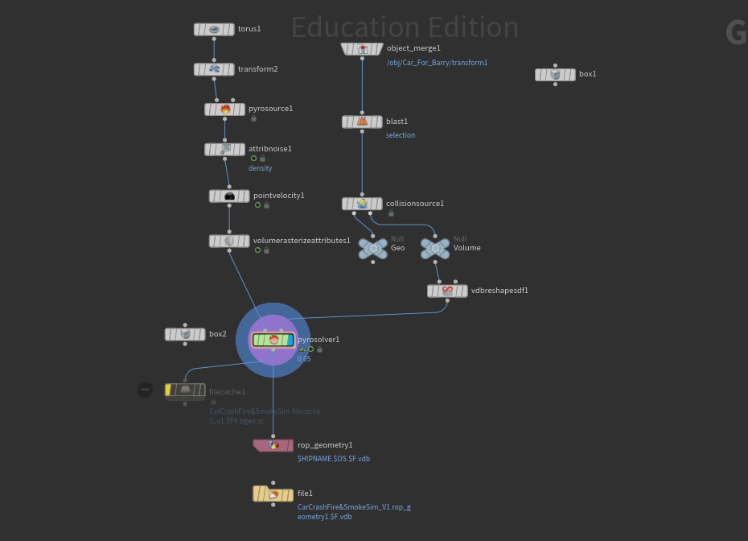
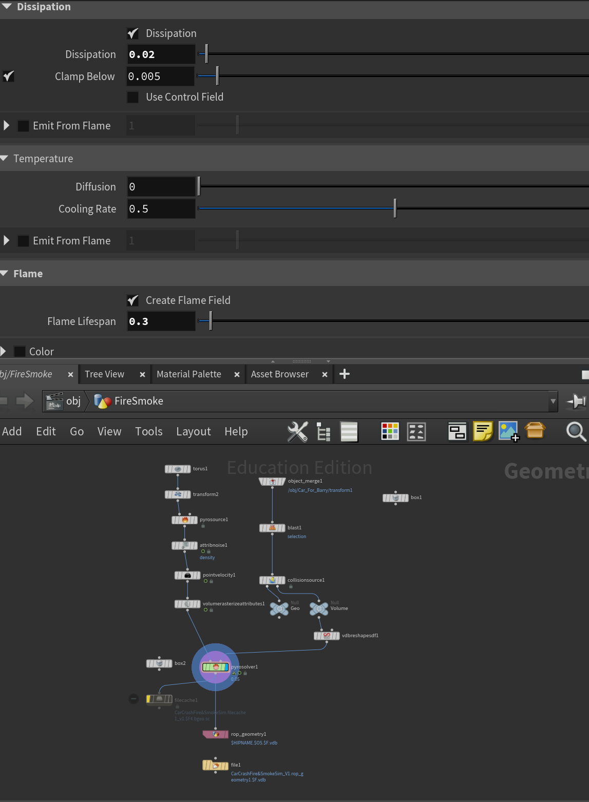

01 / Technical Art / VFX
Vehicle Fire & Smoke Simulation
A vehicle-based fire and smoke simulation developed in Houdini using procedural sourcing, Pyro Solver, and collision geometry. The project explores volumetric smoke behavior, fire dynamics, and visual development, with an additional visualization in Unreal Engine.
- Software
- Houdini, Unreal Engine
- Core techniques
- Pyro Solver · Volumetric Fire & Smoke · Procedural Sourcing · Collision Geometry · VDB Output
Houdini Simulation

02 / Simulation & Look Development
Shaping fire and smoke
A significant part of this project involved experimenting with the Pyro Solver’s fields and shaping parameters. I adjusted turbulence to introduce smaller swirling motions, while tuning dissipation, cooling, and smoke density to control how the plume formed, expanded, and gradually broke apart.
I studied references of real vehicle fires, paying particular attention to the distribution of darker, soot-heavy smoke. I worked to balance darker internal regions with lighter, more dispersed smoke, preserving both the volume and readability of the flames. Much of the process was an iterative balance between believable motion and the visual direction I wanted to achieve.

Fire and smoke sourcing
Torus and Transform geometry feed Pyro Source, Attribute Noise, Point Velocity, and Volume Rasterize Attributes to prepare the source and its simulation attributes.
Vehicle collision setup
The vehicle passes through Object Merge, Blast, Collision Source, and VDB Reshape SDF to prepare collision geometry and volume information for the simulation.
Pyro simulation and output
Pyro Solver brings the source and collision setup together. Field control and shaping adjustments support the visual iteration, while caching and geometry output nodes handle the simulation output; VDB file paths are visible in the network.

Field control
Example settings include dissipation at 0.02, cooling rate at 0.5, and flame lifespan at 0.3, alongside velocity sourcing from v to vel. These controls formed part of the ongoing balance between flame persistence, smoke shaping, and turbulent motion.

03 / Unreal Engine Visualization
Fire in a darker environment
A separate visual presentation of the fire and smoke effect in a darker Unreal Engine scene.